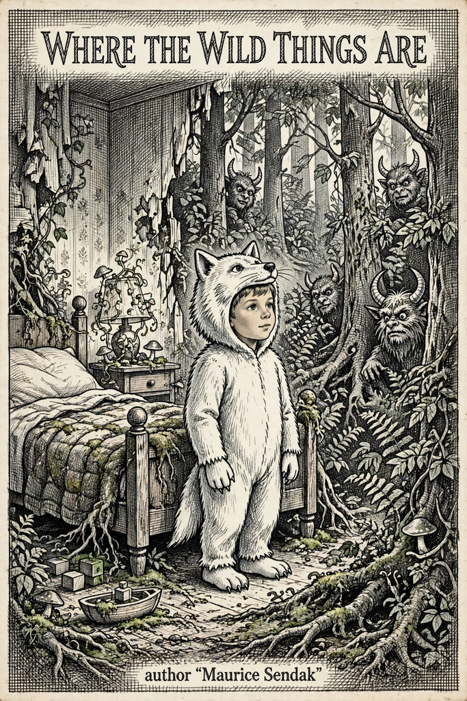

|
 Cover: Picture book cover: a boy in a white wolf suit standing in a forest that grows out of his bedroom, horned monsters peeking between trees, cross-hatched illustration, title 'Where the Wild Things Are', author 'Maurice Sendak' |
DescriptionMaurice Sendak's 1963 picture book, winner of the Caldecott Medal. Sent to bed without supper, Max sails in a private boat to the land of the Wild Things, becomes their king, joins the wild rumpus — and sails home to where his supper is waiting, still hot. Forty-eight pages of cross-hatched colour illustration that changed children's picture books. Download this bookMirrors: [1] LibGen (GET) · [2] Mirror See also: Children's Books |